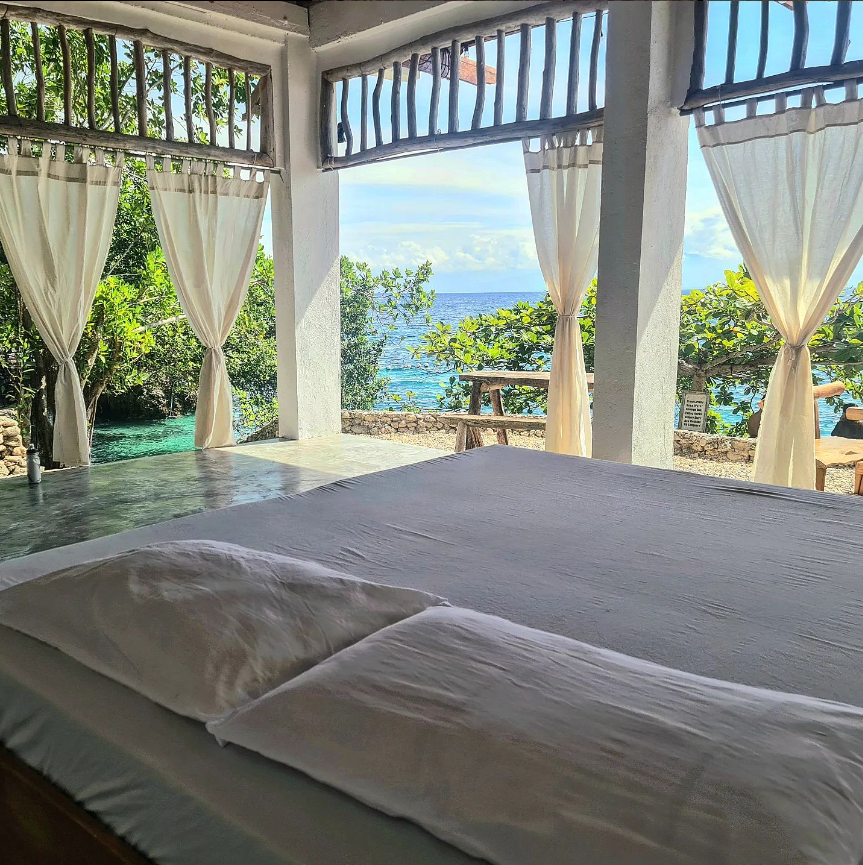

Overnight:
Full House
Overnight private space perfect for large groups, family events, team building, and gatherings.
Area is good for 25 pax. Enjoy the entire Cabana and Al Fresco. Get a view of the ocean from up above or close to the sea.
Experience sunrises and sunsets like no other.

Al Fresco
Overnight private space at Al Fresco good for 15 persons.
Feel the breeze and enjoy the swings in the upper floor right next to the kitchen and a dining area.
Its design seamlessly blends with its natural surroundings, featuring an open-air concept that embodies the true essence of coastal living.

Cabana
Overnight private space good for 10 persons.
Equipped with a full set of amenities including a beds, sala set, kitchen with utensils, and dining space.
Enjoy the warmth of the waves and scenic beauty just steps away from your cozy room with an ocean view right at your doorstep.
